Chapter 9
Radar UAV and bird signature comparisons with micro-Doppler
9.1 Introduction
This chapter reviews the similarities and differences between micro-Unmanned Aerial Vehicles (UAVs), also referred to as drones, and bird targets from the signals they present to radar sensors. The proliferation of small UAV platforms for commercial and personal use has increased significantly in recent years. All projections show a rapid increase in the utilisation of commercial civilian micro-UAV platforms across a number of use cases. In the United States alone, the consumer drone market was valued at $355M in 2015 and projected to be worth approximately $4BN by the year 2024 [1]. This broad range of applications includes capture of high-quality video imagery, remote surveying capabilities, delivery, agriculture and racing. The trend of increasing use has been highlighted in many journal articles and news reports, it seems that drones are here to stay in society and will only increase in their integration in everyday life.
With the significant increase in quantity of available platforms comes the increase in potential threat posed by them. Illegal activity that has been associated with the usage of drone platforms includes drug trafficking, use of surveillance by insurgents, attempted assassination, flying in the restrictive airspace of protected sites and disruptive political statements (e.g. displaying of controversial flag at a football game). This diverse set of illegal/unwanted activity has increased the demand for solutions that can first provide the ability to sense the presence of a drone and then also provide effectors to remove the drone from the situation. The first challenge of sensing a drone has generated solutions that provide a range of capabilities that include the basic ability to detect a drone, identify the intention of a UAV platform and even identify unusual payloads on a commercial drone which may prioritise it as a target. Both solutions do need to work in conjunction with each other in order to have a complete Counter UAV (C-UAV) system. The range of effectors that have been proposed include not only traditional military kinetic effectors but also falcons that can snatch a UAV from the air, other drones with nets to capture a UAV and kamikaze drone systems that purposely fly into the target UAV platform to destroy it.
The term UAV is generically used for all types of unmanned flying vehicles and that can cover a very broad range of targets. UAVs vary significantly in their size, range of flight, weight and cost. This range includes platforms such as the US Global Hawk system which is 45 m in length with a 35-m wingspan all the way down to tiny insect like platforms such as the Black Hornet nano-UAV, which is less than 20 g and only 10×25 cm in size. The majority of this chapter will focus on smaller platforms that are in the mini-, micro- and nano-taxonomy areas as defined by Table 9.1.
Table 9.1 Drone classifications
| NATO UAS class | Maximum take off weight | Common taxonomy |
|---|---|---|
| I(a) | <200 g | Nano |
| I(b) | 200 g to 2 kg | Micro |
| I(c) | 2–20 kg | Mini |
| I(d) | 20–150 kg | Small |
| II | 150–600 kg | Tactical |
| III | >600 kg | MALE or HALE |
The detection and discrimination of drone targets are currently a high-priority area in the field of RF sensing. Alternative sensing options to RF do also exist and these include acoustic sensors that are able to detect and distinguish the motor sounds created by the UAV platforms [2,3]. The limitations of the distance these acoustic signals travel mean that typically the detection ranges for this category of sensor are reduced compared to an RF equivalent and they are very susceptible to background noises disturbing their probability of detection. Optical sensing solutions have also been extensively applied to this challenge and are effective in a broad range of scenarios. The advantage of a radar sensor over optical will be in situations of low visibility (smoke, fog, precipitation) and at night, when even with night vision sensors the capabilities of optical systems are reduced. It has also been proposed to use RF SIGINT or Electronic Surveillance (ES) devices to identify the control signals that are being sent between a base station and the UAV itself. This has been demonstrated to be successful and is a useful tool in the C-UAV challenge, but it is not feasible in all scenarios. In some situations, the UAV platform is autonomous and does not require control from a base station in order to perform its tasks or arrive at its planned destination. With the growing advent of autonomy being realised through examples such as swarm intelligence, it is easy to imagine that in the near future UAV platforms are capable of making their own decisions and therefore require far fewer communications signals.
The following report provides a list of C-UAV products that are categorised by sensing class (radar, Electro-Optical (EO), IR, acoustic, RF signals) [4]. This shows that >500 commercial products exist internationally that all look to address this growing and ever-changing challenge. This is a significant increase compared to the market survey completed by Sandia Labs years earlier [5]. The diversity in solutions demonstrates both the complex challenge that C-UAV systems have in detecting and mitigating these emerging threats and the variety of sensing modalities that can be employed individually or collectively in an attempt to solve the problem. It states that at least 95 countries now have drone capabilities which can at the very least provide much higher fidelity battlespace video feed intel than had been previously possible. Increasingly non-state actors are also using UAVs for both surveillance and actual attacks [6], this prioritises the ability to provide effective UAV surveillance systems to within the role of force protection.
The C-UAV systems broadly attempt to follow the following three key steps:
- Detection – This is through the use of a variety of sensing modes aiming at identifying if a target is present or not. This step does not include the verification that the detected target is in fact a UAV platform or hostile.
- Classification – Once detected, additional information gathered from sensors can be used to classify what the target is. This analysis may use image neural network recognition algorithms, acoustic pattern matching, or in the case of radar micro-Doppler, signature recognition.
- Action – This may be the decision to take kinetic strike action, use electronic warfare methods to disable the drone or simply avoid it.
A key challenge to C-UAV systems is the discrimination between targets of interest and confuser targets that represent unwanted detections. Bird targets represent the most common type of confuser target. It is challenging to discriminate between them and UAV as they are a comparable target in size, speed and Radar Cross Section (RCS). They are present almost everywhere that radar systems have to operate and have been detected by radar since the early origin of radar engineering. Due to the similarity in radar signature, birds can cause common misclassification between them and the priority drone targets.
Within this chapter, the focus will be on the first two components of this process. The detection of drones with radar systems is very much feasible and comes down to the ability to transmit sufficient RF energy in the right direction such that enough is backscattered to a receiver. Of course, the practicalities of doing this in a compact form that is power efficient and fits the specific design constraints is a complex challenge but obtainable. The more elaborate step is the classification stage, a system that has a 100% probability of detection of UAV platforms but is never able to discriminate between a bird and person walking, and a drone would never be accepted as a viable solution. This emphasises the need for detailed investigations into the best means of discrimination of drone platforms from confuser targets if real-world solutions are to succeed.
Other areas of radar classification techniques such as High-Resolution Range Profiles (HRRPs), Synthetic Aperture (SAR) or Inverse Synthetic Aperture (ISAR) imaging can be used to classify moving targets. SAR is more suited for the imaging of static scenes and targets due to the way in which the image is formed using the phase information of a target. The issue with applying HRRP or ISAR processing techniques is that for small UAV platforms the bandwidths required to obtain sufficient detail would be very significant. This is not an impossible task, but due to the increasingly congested Electromagnetic Environment it is unlikely that a C-UAV RF sensor would be able to guarantee access to the required bandwidth to effectively classify these platform types. This is why micro-Doppler signatures are a well-suited feature for classification as it is possible to acquire the required temporal integration on a target using a steerable beam in order to generate Doppler with sufficient resolution and hence visualise a drone targets recognisable rotor blade signature.
The remainder of this chapter includes a review of UAV and bird radar signature research, followed by a description of target motion modelling. Next follows sections describing laboratory measurements of a small UAV using a fully polarimetric sensor and descriptions of the radar sensors we have used for bistatic and multistatic measurements of UAVs and birds. Acquisition of controlled radar measurements of bird and UAV targets using the NetRAD radar system are then described, followed by drone payload measurements, also employing NetRAD. Simultaneous X-band and L-band measurements of drone and bird targets using the NeXtRAD sensor are described along with details of the drone filter tested against these data. The final section of this chapter contains concluding remarks.
9.2 Review of UAV and bird radar signatures research
The detection of bird signatures using radar has been observed since the very early developments of modern radars in the 1940s. A Nature article from 1945 [7] describes how it was given permission for the first time by the Air Defence Research and Development Establishment to state that radar is capable of detecting birds. Experiments from 1941 detected gannets from a system based on Dover, which was initially published in a SECRET report and has since been declassified. These early observations of bird signatures were confirmed via simultaneous visual inspection. The phenomena that started the investigation into these detections were large flocks of starlings leaving their perches in the early morning creating propagating rings on a radar PPI display. These affects were dubbed as ‘angels’ by Lack and Varley [7] and Buss [8]. Ever since these early beginnings of radar systems, the detection of birds has been either a challenge or a focus of a wide range of research outputs and real-world systems.
Since these early developments there has been a constant strand of research that has been focused on the detection and observation of birds using radar for many decades. This domain is now growing significantly due to the desire to discriminate between these naturally appearing targets and small drones as birds represent the dominate confuser target in most scenarios. The challenge is not easily solvable due to the similar characteristics of these two classes of target. Both can fly low to the terrain, alternate between hovering and forward motion, represent low RCS signatures due to their size and materials. This is at odds with the traditional targets that large ground-based radar systems typically would detect and track. These traditional targets would be at very long ranges 10s–100s km, have a much larger RCS (particularly commercial airliners) and move at much faster speeds with reduced flight pattern changes. For all these reasons, the detection and tracking of small drone targets has required a significant amount of effort to adapt previous techniques that are no longer suitable.
The observation of birds only has been the sole focus of a number of publications in the area of biology and zoology journals. This includes analysis of bird migrations [9,10], monitoring of nesting seabirds [11] or identifying bird species using radar [12]. This zoology- and biology-focused research has mostly looked to leverage radar as a sensor able to detect, count biomass or migration numbers or detect areas birds travel to or through. An early review of radar use in detecting birds as well as insect targets can be found in [13], which includes a summary plot of RCSs from a number of sources for these targets plotted as a function target weight against RCS which is a useful review. Clearly radar has been successful in supporting this category of research but there is little work on highly detailed discrimination of bird targets from other targets, mostly because the UAV discrimination challenge is a new paradigm that has not been present for sufficient time to investigate extensively.
The radar signature from large sea birds was analysed within [14]. This work used a radar, a system in conjunction with a camera to gather data on sea birds and evaluate how the radar signature changed with the physical movement of the bird. Micro-Doppler signatures of the flying gannets showed that flapping movements were detectable within a micro-Doppler spectrogram. From these signatures, it was found that the ratio of the body to wing signature varied significantly from −30 to 5 dB across a range of azimuth angles of the target with respect to the radar. A challenge with this work is accurate estimation of the azimuth angle of the bird from the available video footage.
An excellent modern comparison of drone and bird signatures was reported within [15]. A total of 11 targets were included in the capture data set of which 10 were drones of different configurations (including helicopter, quadcopter and fixed wing classes). The micro-Doppler signatures of these platforms were then evaluated, and features extracted from them were based on eigenvalue decomposition. The data originated from an X-band Frequency-Modulated Continuous Wave (FMCW) 9.5 -GHz monostatic radar. The work did not look to fix aspect angle, distance or velocity within each recording; therefore, these variables change within each captured file analysed. The classification success achieved was high at 95% using a non-linear SVM classifier, which is impressive for an 11-class problem. These were measured in relatively controlled environments and with high SNR signatures but show promising signal processing methodologies to help support the challenge of drone and bird classification.
The use of polarimetric radar as a sensing method for discrimination between UAVs and birds was extensively reviewed by Torvik in his doctoral thesis [16]. Polarisation is widely used in radar remote sensing to provide additional information on the target or scattering phenomena that is occurring. In meteorological radar systems, polarisation can be used to differentiate between the type of precipitation and level of precipitation that is occurring by observing the ratio of HH/VV signatures and therefore calculating the ‘roundness’ of the raindrops and hence how heavily it is raining. In the context of UAV or bird platforms, polarisation can be used to evaluate the overall scattering ratio from a fixed target in order to help characterise it or differentiate it from another type of target. Even more effective is the analysis of how this polarisation ratio changes over a period of time. In the case of a bird, one can imagine how the superstructure of the bird’s body and wings alter significantly as they move through a flapping motion. This change in shape provides a significant difference in how the EM wave interacts and therefore changes the resultant polarisation scattering [17]. In comparison, a drone does not undergo the same superstructure change over time and therefore would not be expected to present the same change in polarisation scattering as a bird. Analysis was performed to extract polarisation-based parameters which included values such as the Linear Depolarisation Ratio (LDR). This is defined as
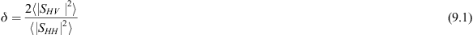
where δ is the LDR, SHV and SHH are the scattering cross and co-polar components of the target scattering matrix S, respectively. It is assumed that components SHV and SVH are equal in this case, so they are interchangeable. By evaluating this change of this LDR over time, it is possible to discriminate between drone and non-drone (bird) targets using a fully polarimetric radar system.
This thesis used both modelling and empirical captured data to evaluate the difference in scattered returns from a variety of UAV and bird classes. The conclusions showed that the use of polarimetric method can enable improved discrimination between UAV and bird platforms. In terms of scattering signatures, it was found that the use of simple spheroid component parts in EM scattering modelling broadly represented the signature of bird targets in L and S frequency bands. The variation in RCS from broadside to front/end was found to be between 15 and 30 dB. At end/front of geometries the addition of the wings was found to be sufficient to require these to be incorporated into a model as they provided approximate equal scattering signatures as the body of the bird. At S- and L-band frequencies, the scattering from the wings of the bird is in the Rayleigh region. Therefore, the scattering from them is highly dependent on the polarisation of the illuminating signal.
The additional information that polarimetry provided for the classification of targets was found to be beneficial at both L and S bands. Without polarisation parameters being extracted, in general from the empirical data study, it has been shown that the classification success was found to be higher in horizontal polarisation compared to vertical. When polarisation is taken into account via the use of specially extracted polarisation features, it was found to increase classification success rates by 25% and 21% for L and S bands, respectively, which is certainly a significant benefit that would justify the required additional hardware capability [16]. This additional benefit is contradictory to previous comments from Skolnik on the benefits of polarimetry for target classification [18]. Here it was stated that the perceived lack of benefit for classification purposes was down to a few reasons which include interleaved pulses of different polarisation illuminating the target at a slightly different time step, lack of isolation between polarisations, multipath contributions and how the net polarisation of N scatters making up a target differs from the individual polarisation of each of these separately.
Recent measurements at the higher frequency bands of 24 and 94 GHz were performed by researchers at the University of St. Andrews [19]. These higher frequencies allow for wider bandwidths and greater sensitivity of measurement of the two target classes. This work compared the signatures of three small UAVs (two quadcopter platforms and one hexacopter) to the signature of four birds (Northern Hawk Owl, Harris Hawk, Indian Eagle Owl and Tawny Eagle). The average modal RCS values for the drone targets varied from −20 to −8 dBsm, while the bird signatures ranged from −30 to −19 dBsm at 24 GHz. The measurements at 94 GHz reconfirmed these modal RCS values to within ~1 dBsm. This does show that radar engineers should expect larger reflections from drone platforms in comparison to bird signatures on average. Although in comparison the maximum RCS values from the bird signatures were found to range from −5 to 5 dBsm at 24 GHz which was much more comparable to the −6.2–8 dBsm values the drone exhibited. Perhaps this is linked to the bird signatures creating a larger flash in reflectivity when their wing structure is oriented such that a greater amount of RF energy is reflected back to the radar system.
9.3 Target motion models
This section provides details on the modelling of UAV rotor blades micro-Doppler signatures. A model was adapted from a simple helicopter-based micro-Doppler signature model which used a single-point scatterer to represent the body of the helicopter and four-point scatterers to represent the tips of the rotor blades. The adaptions made were used to create a model for UAV micro-Doppler signatures which has flexibility in the selection of the parameters given next. The model imposes no restrictions on the values of these parameters, leading to the possibility of practically unrealisable models:
- number of rotors,
- number of blades,
- blade length,
- body to rotor arm length,
- UAV radial motion,
- counter rotation of alternate rotors,
- body/rotor orientation,
- aligned or random initial blade angles,
- multiple scatterers per blade,
- body and blade tip RCS and
- additional blade scatterers RCS scale factor.
This degree of flexibility was introduced to allow for modelling a wide variety of scenarios and to isolate what are the fundamental components creating the observed micro-Doppler signatures. By tailoring these values, it is possible to model a specific UAV of interest, or to observe how any changes made to them induce changes in the observed micro-Doppler signatures. With the current model, all the parameters remain constant for the duration of a model run, no variation in RCS or number of scatterers occurs. The RCS of the UAV body and the RCS of the blade scatterers are set to constant values for each model run. As such there is no dependence in the model for these values on the body or rotor materials, or on the wavelength of the illuminating signal.
The geometry of the UAV platform and its rotor blades is initially setup in one of the configurations illustrated in Figure 9.1. This allows for the changing of the orientation and location of the rotors with respect to the sensor as well as the alignment of each of the rotor blades. The sensor and UAV are assumed to reside in the same horizontal plane.
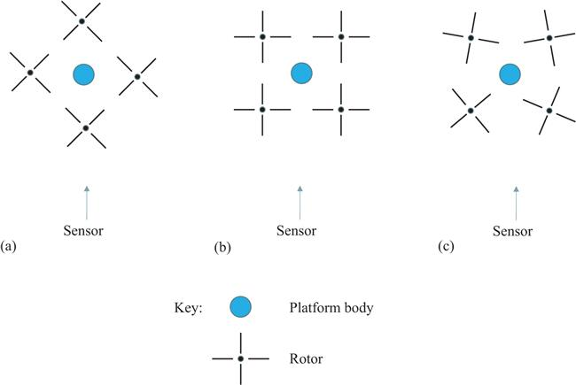
Figure 9.1 UAV and sensor configurations (a) aligned start with diamond orientation, (b) aligned start with square orientation, (c) random start with square orientation
Typical parameters used for the modelling of the micro-Doppler signatures are shown in Table 9.2. The simplest case which can be modelled is a single blade with a single-point scatterer at the blade tip, along with the UAV body, the signature of which is shown in Figure 9.2(a). The rotation rate in this example is slowed to only 5 rps to visualise the individual blade flash returns. The sinusoidal structure seen in Figure 9.2(a) is a direct result of the changing Doppler frequency induced by the blade tip scatterer on the radar return as the blade tip traverses its circular path. This scenario is then extended to include two and three scatterers per rotor blade, see Figure 9.2(b) and (c). It can be seen that as more scatterers are added, the area under the sinusoidal blade flash outline becomes more occupied due to the range of Doppler frequencies created by the various scatterers. The results shown from the model used parameters that match either the NeXtRAD X-band system (8.5 GHz) or a Volcano monitoring FMCW radar system (10.25 GHz) developed by Dr Nial Peters at University College London (UCL) to allow validation of the modelling result with real experimental captures.
Table 9.2 UAV micro-Doppler model parameters
| Parameters | Value |
|---|---|
| Number of rotors | 1–4 |
| Rotor rotation | 5–150 rps |
| Blades/rotor | 2 blades per rotor |
| Blade length | 0.13 m (typical – small UAV) |
| Scatterers/blade | Multiple |
| Radial velocity | 20 m/s |
| Radar frequency | 8.5 GHz |
| Body RCS | >1 m2 |
| Blade RCS | 0.1 m2 |
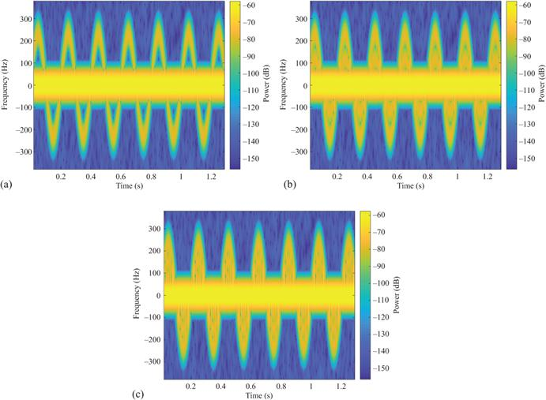
Figure 9.2 Micro-Doppler of UAV body and single blade with (a) a single scatterer per blade, (b) two scatterers per blade, (c) three scatterers per blade (carrier frequency is 8.5 GHz, PRF is 1 kHz, rotor rotation rate is 5 rps, spectrogram window is 50 ms, spectrogram overlap is 90%)
When moving from one blade per rotor to two and then three, the changes observed can be seen within Figure 9.3. This shows how the increase in blade numbers increases the observed frequency that blade flashes occur and eventually results in a smoothing of the signature such that overlapping blade flash signals are almost continuously present.
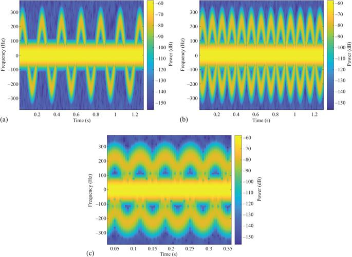
Figure 9.3 Micro-Doppler of UAV body and single scatter per blade with (a) a single blade, (b) two blades, (c) three blades (carrier frequency is 8.5 GHz, PRF is 1 kHz, rotor rotation rate is 5 rps, spectrogram window is 50 ms, spectrogram overlap is 90%)
Model outputs were compared with controlled laboratory-based measurements carried out using an X-band FMCW radar with 400 MHz of bandwidth, for validation purposes. Measurements representing single scatters at the blade tips were undertaken by simulating each scatterer by a small metal ball, of approximately 12 mm radius, mounted on a cork disc driven by a low-speed motor. Additional balls are added between the tip and the disc hub to represent more scatterers on each blade.
The single scatterer per blade result is shown in Figure 9.4 for the balls being placed at a distance of 8 cm from the disc centre and a rotation rate of approximately 0.8 Hz. The deviation from a pure sine wave shape is likely due to inaccuracies in the experimental setup, for example the disc not being perfectly flat with respect to the motor shaft and positional errors for the balls.
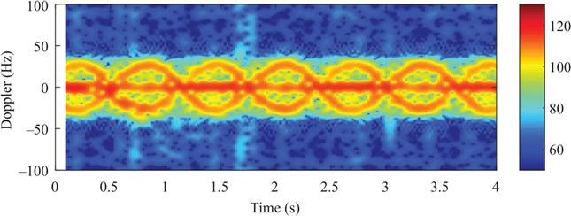
Figure 9.4 Laboratory measurement of two ball bearings placed at 8 cm from motor centre representing point scatterers at rotor tips (carrier frequency is 10.25 GHz, PRF is 1 kHz, rotor rotation rate is approximately 0.82 rps, spectrogram window is 250 ms, spectrogram overlap is 90%)
The equivalent output from the UAV radar model is shown in Figure 9.5 and confirms the same basic structure. The model output shows a cleaner, more symmetric structure as none of the experimental inaccuracies are included. The area under the sine wave structure in the experimental result is smeared, not seen in the model output, due to the spread of Doppler components caused by the experimental setup.
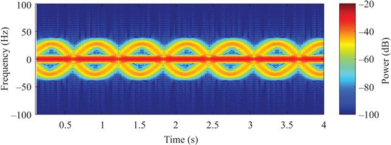
Figure 9.5 UAV radar model output for a single scatterer placed at each blade tip for a two-bladed rotor of radius 8 cm (carrier frequency is 10.25 GHz, PRF is 1 kHz, rotor rotation rate is 0.82 rps, spectrogram window is 250 ms, spectrogram overlap is 90%)
Replacing the disc and ball bearing with a 26-cm diameter plastic rotor from a UAV provides the result shown in Figure 9.6. The use of a real rotor results in the sine wave structure becoming less pronounced and instead a vertical structure becoming the dominant feature, caused by the interaction of multiple scatterers along the blade.
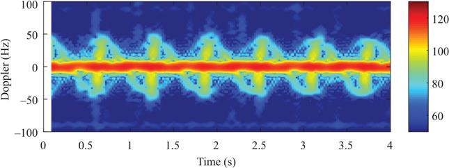
Figure 9.6 Laboratory measurement of 13-cm radius UAV plastic rotor (carrier frequency is 10.25 GHz, PRF is 1 kHz, rotor rotation rate is approximately 0.82 rps, spectrogram window is 250 ms, spectrogram overlap is 90%)
This experimental result in Figure 9.6 was replicated using the UAV radar model and showed good degree of similarity when employing nine, equally spaced, scatterers per blade, see Figure 9.7. It was found that when employing less than nine scatterers, additional vertical line segments appeared in the structure.
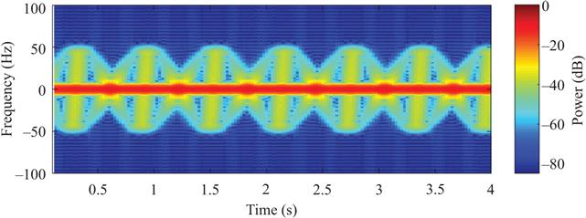
Figure 9.7 UAV radar model output for nine scatterers per blade (carrier frequency is 10.25 GHz, PRF is 1 kHz, rotor rotation rate is 0.82 rps, spectrogram window is 250 ms, spectrogram overlap is 90%)
In comparison to the previous figures where the predominate signal that is observed is based on a blade flash, as the rotation rate of the rotor is increased to more realistic speeds and the Short-Time Fourier Transform (STFT) applied to the signals is long compared with the rotation time, the micro-Doppler phenomena change to become HElicopter Rotor Modulation (HERM) lines. This affect presents itself as horizontal lines in the micro-Doppler spectrograms compared to the vertical blade flash lines previously shown, see Figure 9.8.
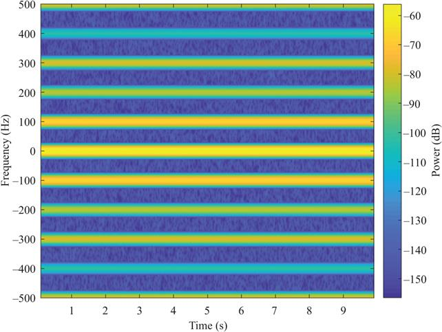
Figure 9.8 Micro-Doppler of modelled UAV with a single, two-bladed rotor, rotating at 150 rps with a single scatterer per blade (carrier frequency is 8.5 GHz, PRF is 1 kHz, rotor rotation rate is 150 rps, spectrogram window is 200 ms, spectrogram overlap is 90%)
The HERM line separation is defined as being
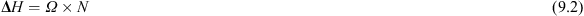
where the ΔH is a product of propeller rotational rate
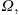
and number of blades N, per propeller. These parameters are independent of the radar RF in comparison to the maximum blade flash value which is directly related to RF via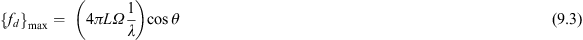
where
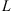
is the blade length,The HERM line presentation of the micro-Doppler signatures may also be compared with laboratory measurements. This comparison is shown in Figure 9.9 for the measured rotor (left) and the model (right), where the HERM lines are seen at approximately 1.6-Hz spacing, in agreement with (9.2) for a two-bladed rotor with a rotation rate of approximately 0.8 Hz. The measured results from the rotor and the model again show good agreement.
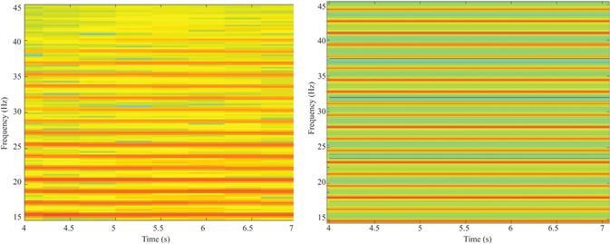
Figure 9.9 Laboratory measurement of 13 cm radius UAV plastic rotor (left) and UAV radar model output (right) (carrier frequency is 10.25 GHz, PRF is 1 kHz, rotor rotation rate is 0.82 rps, spectrogram window is 4 s, spectrogram overlap is 90%)
The other key target class of interest to this research is birds. It is an over-simplification to label all birds under one target class as there is a great deal of variation between species of bird in terms of their physical characteristics (size/weight/wingspan) as well as how they fly. Their flight movements are complex and can include many different types of movement. The general classes for their movements can be thought of as two key modes, flapping and gliding. The frequency and duration of each mode are very dependent on species, where they are flying, duration of flight and if they are flying in a fixed course or frequently changing direction. The biomechanics of bird flight has been studied in great detail for a broad range of birds and a useful recent summary example can be found in [20]. In addition to this, previous studies on bird RCS have been conducted to evaluate the expected average reflected energy at a given frequency [21]. The mean RCS for a pigeon target were quoted as being 15 cm2 at X-Band and 80 cm2 at S-band, whereas a smaller sparrow was found to have a mean RCS of only 1.3 cm2 at X-band and 12 cm2 at S-band.
Although flight movements have been studied from a biomechanics perspective, very little prior work exists on the linking of micro-Doppler signatures and bird flight dynamics from a modelling perspective. Prior applied literature in the area focuses more on the application of avoiding ‘bird strikes’ to aircraft [22,23]. This is where a single bird or a flock would hit an aircraft and cause severe damage. This work focuses on the modelling of the detectability of a bird based on RCS calculation and radar parameters and not the modelling of micro-Doppler for classification. Torvik also presented some evaluation of RCS modelling of bird targets within [16], but again this did not replicate any micro-Doppler signature that a bird may produce. Therefore, a research gap clearly exists in high fidelity micro-Doppler motion models for bird targets to allow for the test and evaluation of both detection and classification algorithms.
9.4 Fully polarimetric, multiple observation angle laboratory measurements of UAV target
In this section, we describe the physical arrangement and measurements taken in an anechoic chamber environment of a small UAV (DJI Spark). Measurements were taken at various sensor-target observation angles for each polarimetric configuration, HH, HV, VH and VV. The data were captured using an X-band FMCW radar, further information can be found here on the system [24]. The operating parameters used in this measurement campaign are shown in Table 9.3.
Table 9.3 Summary of radar parameters used for laboratory-based polarimetric measurements of UAV
| Radar type | FMCW |
|---|---|
| Centre frequency | 10.25 GHz |
| Bandwidth | 400 MHz |
| PRF | 2 kHz |
| ADC sample rate | 1.4 MHz |
| Chirp period | 0.4 ms |
| Data collection period | 20 s |
The physical arrangement of the experimental measurements is based on a boom which is initially placed horizontally (0°) and can be raised such that it forms an angle with the horizontal plane up to a maximum angle of 90°. The radar antennas were mounted on a fixed platform at the lower end of the boom such that their pointing direction follows the angle of the boom and were directed towards the upper end of the boom. The target UAV is mounted on a small platform which pivots at the upper end of the boom such that the UAV can be operated in as close as possible to a normal horizontal hovering position, while allowing the observation angle between the sensor and the target to vary. Along the boom, a small metal ball was attached in order to act as a calibration target. The setup is illustrated in Figure 9.10.
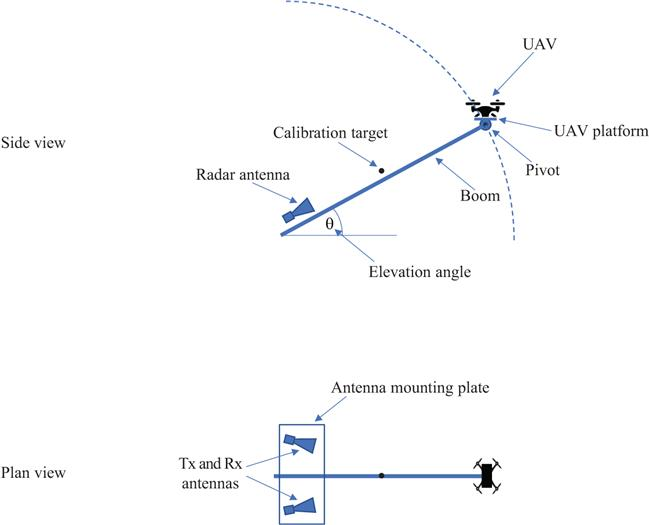
Figure 9.10 Illustration of polarimetric measurement setup
Each data collection involves raising the boom to the required angle, ensuring that the UAV is horizontal on the pivot platform. The UAV motors are started and allowed to run at the default idle rate. In order to capture the polarimetric variation, the antennas were physically rotated to the desired configuration at each elevation angle.
Measurements were taken at HH, HV, VH and VV polarisations and with observation angles at 20° steps between 0° and 80° and an additional measurement at 90°. The 0° angle observation represents the in-plane measurement where the radar sensor measures the UAV side-on. The 90° angle case is where the UAV is vertically above the radar sensor. The 90° observation might also be interpreted as a fixed wing, multi-propeller aircraft receding from the radar sensor.
For each polarisation, a calibration measurement was taken. This was taken at 0° inclination angle and without the drone rotors spinning. The mean intensity of the zero-Doppler frequency for the range cell containing the calibration target was taken as the calibration value for all the measurements taken for that polarisation. This is a preferable strategy to using the zero-Doppler intensity of the drone body as a calibration, since the RCS of the drone body will change with inclination angle. The mean HERM line intensities presented in this section are then computed as follows: for each radar time sample, the maximum intensity over a small window (typically around 100 Hz) of Doppler frequencies encompassing the HERM line of interest is computed. These values are then averaged over the full measurement time span (20 s) and converted to dB using the previously recorded calibration value as the 0-dB point. This calculation can be expressed as follows:
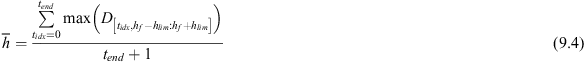
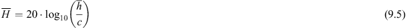
where is mean HERM line intensity in dB, is calibration value,
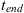
is the time index of the final measurement, is Doppler–time–intensity array,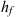
is the HERM line frequency of interest, and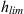
represents the range of frequencies considered.The strongest SNR HERM line at ~175 Hz and its negative frequency counterpart were selected to allow a clear comparison between aspect angles to be evaluated.
Figures 9.11–9.14 show spectrograms of the range cells containing the drone at 0°, 40° and 90° inclination angles for HH, HV, VH and VV polarisations, respectively. These spectrograms were produced using time windows of 400 samples (corresponding to 0.2 s) with an overlap of 90%. The results shown in Figures 9.15 and 9.16 were derived from these spectrograms (and similar ones at different inclinations which are not shown here for brevity).
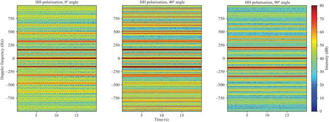
Figure 9.11 Spectrogram for HH polarisation at 0°, 40°, 90° inclination angles. Intensities are not calibrated to the calibration target
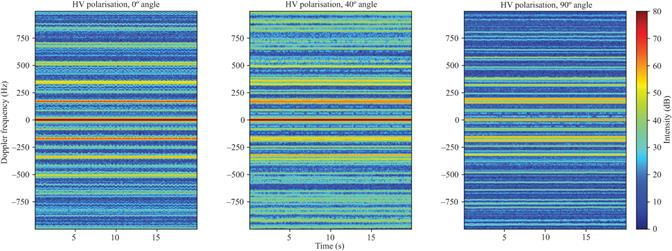
Figure 9.12 Spectrogram for HV polarisation at 0°, 40°, 90° inclination angles. Intensities are not calibrated to the calibration target
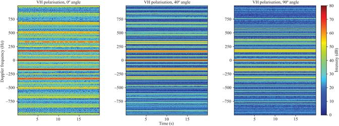
Figure 9.13 Spectrogram for VH polarisation at 0°, 40°, 90° inclination angles. Intensities are not calibrated to the calibration target
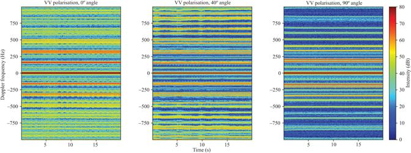
Figure 9.14 Spectrogram for VV polarisation at 0°, 40°, 90° inclination angles. Intensities are not calibrated to the calibration target
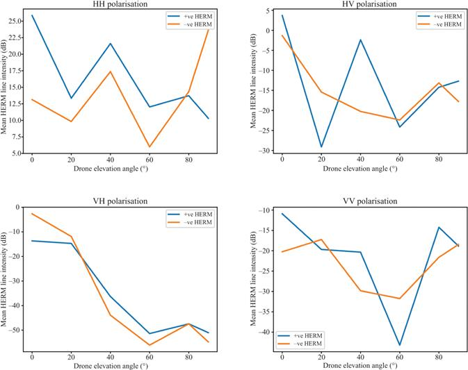
Figure 9.15 Mean HERM line intensity against drone elevation angle plots for each of the polarisation configurations. Results for both the positive Doppler HERM line and its negative Doppler counterpart are shown
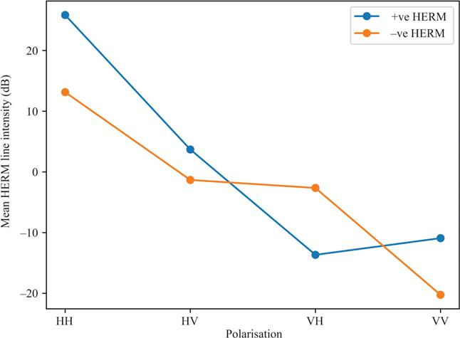
Figure 9.16 Mean HERM line intensity at 0° drone elevation angle for the different polarisation configurations. Results for both the positive Doppler HERM line and its negative Doppler counterpart are shown
Figure 9.15 shows the variation of mean HERM line intensity (as defined earlier) with inclination angle of the boom (drone elevation angle) for each of the four polarisation configurations. Where we refer to a polarisation by a two-letter abbreviation, we list transmit polarisation first, e.g. HV refers to horizontal polarisation on transmit and vertical on receive. Figure 9.16 shows how the mean HERM line intensity at 0° inclination angle changes with polarisation configuration.
Figures 9.15 and 9.16 show that an HH polarisation configuration gives the highest intensity HERM lines across all viewing angles and is therefore the most suitable configuration for C-UAV systems. In general, HERM line intensity drops towards mid-range elevation angles then recovers somewhat towards high elevation angles (although VH is an exception to this).
Somewhat surprisingly, HV and VH configurations show markedly different behaviours to each other, with HERM lines in VH showing a consistent decrease in intensity with elevation angle, whereas HV shows some recovery of intensity towards high angles (similar in behaviour to HH and VV). Above 20° elevation angle, VH consistently provides the poorest HERM line intensity making it the least suitable configuration for C-UAV applications.
Figure 9.15 shows that both HH and HV polarisations show a peak in HERM line intensity at 40° elevation angle. We believe that this is caused by the rear (furthest from the radar) rotors of the drone being obscured from the radar’s line of sight by the body of the drone when it is at 20° elevation angle. This drastically reduces the HERM line intensity at 20° elevation angle, resulting in a peak in intensity at 40° when the rotors are no longer obscured. Such an effect is not visible in the VH and VV data; this may be due to the blades being less obscured when they are parallel to boresight and more visible in the vertical polarisation.
HERM lines are clearly visible at 90° elevation angle for all polarisations. This is unexpected since there should be very little motion along boresight in this configuration. However, the results show not only that HERM lines are visible but also that they are of higher intensity than for mid-range elevation angles (with the exception of VH). A detailed explanation of this phenomenon is beyond the scope of this study; however, we hypothesise that there may be multiple contributing factors to HERM line creation. Although classical blade flash, as previously described in this chapter, is clearly one of them, by itself it does not explain the visibility of HERM lines at 90° elevation angle. Other possible factors could be obstruction of the blades by the drone body at a particular rotation angle leading to a periodic variation in target RCS, or a periodic modulation of target return caused by blades moving in and out of alignment with the system polarisation.
The 90° elevation angle measurements are approximately equivalent to the fixed-wing UAV case, where the rotor is mounted in the vertical plane, although to be entirely analogous the radar would have to be mounted above the drone. However, the fact that HERM lines can still be observed in this orientation suggests that the techniques developed in this study for distinguishing drones from non-drone targets may also be applicable to fixed-wing drones.
As in the NeXtRAD data, see Section 9.8, there is a distinct asymmetry between the positive and negative Doppler frequency HERM lines. As shown in Figure 9.15, the level of asymmetry appears to be dependent on the elevation angle of the drone, and for the case of the HV polarisation positive and negative even show significantly different trends with angle. Specifically, the negative Doppler frequency line shows no peak in intensity at 40° elevation angle in sharp contrast to the positive Doppler frequency line. Positive Doppler frequency lines are caused by the leading edges of the blades, whereas their negative frequency counterparts are caused by the trailing edges of the blades. Since the two edges of the blades are physically different in shape, it seems likely that their RCSs will not only be different but will also have different responses with respect to viewing angle. This may explain the asymmetries in HERM line intensities that we observe.
9.5 Bistatic and multistatic radars used to gather bird and drone data
Two multistatic radar systems have been developed by both UCL and University of Cape Town (UCT) to gather data on both drones and bird signatures. These two radar systems are NetRAD and NeXtRAD which are both three-node pulsed Doppler radars. The first system developed was NetRAD, which started development in the early 2000s and supported a number of PhD projects over a period of almost 15 years.
9.5.1 NetRAD
NetRAD is a multistatic radar sensor system developed by UCL and UCT [25–27]. This radar system was developed initially as a three-node pulsed Doppler multistatic sensor network. Each node is identical and is capable of operating as a transceiver unit to both send and receive radar waveforms, see Figure 9.17. The sensor system was designed to operate in the S-band frequency range (2.4 GHz), this was because commercial components are readily available in this frequency band, as well as the fact that ISM band allows for low power transmissions without requiring a spectrum licence. The programmable parameters this system is capable of varying include its bandwidth, pulse length and PRF. Initially the system was capable of operating synchronously through the use of wired connections between the nodes. In collaboration with UCT, it was adapted so that synchronisation was provided via a GPS Disciplined Oscillator (GPSDO) solution [28]. This enabled wireless synchronisation across the multi-node network where baselines of up to 5 km were proven feasible. The specification for the system can be seen in Table 9.4.
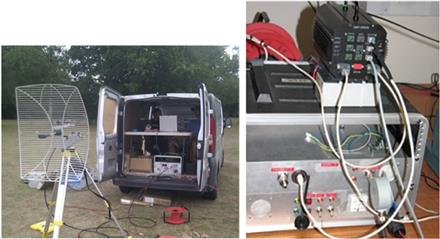
Figure 9.17 Image showing single node of a NetRAD radar system deployed in a van and on a bench top with GPSDO device injecting the required synchronisation signals
Table 9.4 NetRAD radar parameters list
| Parameters | Value |
|---|---|
| Central frequency | 2.4–2.5 GHz – S-band |
| Bandwidth | 45 MHz |
| Output power without high power amplifier | +23 dBm |
| Output power with high power amplifier | +57.7 dBm |
| Radar waveform | Pulsed |
| PRF | 1 Hz–10 kHz |
| Pulse length (typical) | 0.1–20 μs |
| Antenna gain | 27 dBi |
| E-plane/H-plane 3 dB beamwidth | 11°/8° |
The system has now been retired, but previous experimental campaigns using this system include measurements of individuals walking, carrying simulated rifle objects, as well as drone (i.e. UAV) and bird targets. Through capturing the movements of these targets in a variety of multistatic geometries, the advantages of a radar-sensing network have been quantified through the classification of the micro-Doppler signatures observed.
This system was used in a number of multistatic drone micro-Doppler radar measurements, some of which will be reviewed next. The key areas of investigation of interest to this chapter are distinguishing if a drone is carrying a payload and the analysis of bird and drone micro-Doppler using a multistatic system.
9.5.2 NeXtRAD
The NeXtRAD radar system is also a multistatic radar system developed jointly by UCL and UCT. This system is the successor to NetRAD and has a significant number of improvements over that system. It is also a coherent pulsed Doppler radar which is made up of three radar nodes. The key differences are that it is a multichannel system which enables polarimetric experimental captures; it is capable of dual frequency operation as well as having a much improved digital backend and Command and Control architecture. One node operates as the transceiver and the other two as identical receivers. The system can operate at L-band with one receiving channel and with two at X-band. This allows for simultaneous co- and cross-polarised measurements at X-band to be performed. To provide the synchronous local oscillator signals, GPSDOs are used to input a common 100-MHz reference as well as a phase synchronous one pulse per second. The transmitted waveforms that have been used for all the data shown here are Linear Frequency-Modulated (LFM) signals which have a 50-MHz bandwidth. The system does have arbitrary waveform control and therefore is flexible in this design, but only LFM signals, with varying duration, have been utilised in the UAV measurement campaigns. Full specifications for the system can be seen in Table 9.5.
Table 9.5 NeXtRAD specifications
| Parameters | Value |
|---|---|
| X-band peak output power | 400 W |
| L-band peak output power | 1.4 kW |
| No of Rx channels (X/L band) | 2/1 |
| PRF | 1 Hz–10 kHz |
| Antenna gain | 27 dBi |
| L-band antennas beamwidth | 13.9° azimuth/12.4° elevation |
| X-band antenna beamwidth | 9.1° azimuth/10.4° elevation |
This system has been used to capture the measurement of sea clutter, drones and small boat targets while based in Simon’s Town region in South Africa [29–34].
These two radar systems are almost unique in their position as coherent multistatic radars that are capable of networked sensing of targets using GPSDO synchronisation [28]. Very few comparable systems exist in open academic environments and therefore the data from these systems represent a rare opportunity for investigation of multistatic target signatures as well as clutter returns.
9.6 NetRAD bird and drone S-band measurements
The NetRAD sensor was deployed in 2016 for trials specifically focused on capturing both bird and drone signatures. This measurement campaign used ‘cooperative’ bird targets which were arranged via a falconry centre. This enabled the pre-planning of way point positions such that known ranges, orientations and flight paths could be configured to maximise the utility of the data and to arrange clear meta-data on the position of the bird which is typically impossible with ‘non-cooperative’ natural bird targets. The radar parameters used for the capture were a PRF of 5 kHz, transmit power of 23 dBm, LFM chirp with a bandwidth of 45 MHz and each capture was for 30 s, but only the sections which had the target in flight were selected for analysis. The measurements shown in this section were first published within [35]; readers are referred to this paper for further details.
The bird targets that were captured included a Hooded Vulture, Eurasian Eagle Owl and a Barn Owl. These varied significantly in their size, wingspan and weight, with the Vulture being the largest with a wingspan of approx. 1.7 m and weight of 1.8 kg, compared to the barn owl which had only an 80-cm wingspan and weighed 280 g, while the eagle owl represented a medium value between these two extremes. These three bird targets were then compared to a quadcopter drone target which was flown over the same waypoint positions once the birds were safely put away. This type of measurement is useful as it allows direct comparison of bird and drone signatures from a prearranged geometry which is rarely available.
The micro-Doppler signatures from the three bird targets can be seen in Figure 9.18. The images have been normalised to a peak of 0 dB in each case but are not calibrated; therefore, you cannot compare a given SNR from one figure to another. The spectrogram window used to create the data shown was 0.3-s long, with an overlap of 95%. Clearly a significant difference can be observed between the captures shown for the drone target and all three bird targets. The drone target produced HERM line responses in the outer Doppler bins which were not present in any of the bird captures. The origin of these HERM lines was described in detail within Section 9.3. In comparison, the bird targets show two clear different motion types: the flapping of the wings and gliding movements. When the bird is taking off, landing or changing its direction, a flapping movement is required; this can be seen at different times within all three bird signatures in Figure 9.18. At other points within the capture, the birds are gliding which does not require any additional movement of their wings and hence does not create a micro-Doppler signature. When comparing the bird signatures, it was found that the smaller bird (the barn owl) produced a much more rapid flapping action which was clearly observable across multiple different micro-Doppler signatures. On the other hand, for the larger birds (the Vulture and Eagle Owl) the flapping that did occur was less frequent but produced higher micro-Doppler excursions from the main body, which must be due to the wingspan difference. These different movement mechanics are the key differentiator between the drone and the bird targets when evaluating the micro-Doppler. Otherwise, the birds are shown to be just as agile as the drone platform with the exception that they do not hover at any point. Some bird species do hover (particularly birds of prey surveying an area for prey) but this was not captured in the trials performed.
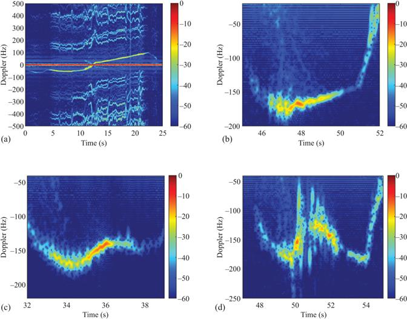
Figure 9.18 Drone and bird monostatic micro-Doppler signatures from HH polarisation NetRAD node: (a) DJI Phantom 2 Quadcopter, (b) Eurasian Eagle Owl, (c) Barn Owl, (d) Hooded Vulture
From this data, it was possible to extract features which could then be used to classify which target was present. The data were broken up into subsections to allow for N samples to be produced from the repeated flights that the birds took between their perch locations. The features extracted from these sections were taken from three different domains: the spectrogram domain (denoted as Time–Frequency (TF) and shown in Figure 9.18), the Singular Value Decomposition (SVD) domain and the Cadence Velocity Diagram (CVD) domain. The TF domain is the traditional space where micro-Doppler signals are analysed and hence makes it a first choice for creating features. The SVD domain looks to compress the information within the micro-Doppler signals into ordered eigenvalue contributions and therefore is well suited when trying to select features that represent the key contributors to the overall signal. Finally, the CVD domain represents the rate with which each frequency contained in the TF spectrogram repeats, hence is suitable for creating features for periodic movements. Features from all three of these domains have been successfully used previously for micro-Doppler classification challenges and it was felt that they would also be applicable to this situation [36–39].
From within each domain, the selected features were the mean, variance and entropy of the complex samples. In the SVD domain, the diagonal S output matrix was selected and the mean, variance and entropy of this were used as features. These same features were extracted from the full CVD domain matrix to make a total of nine features used to classify the targets. The classification problem was setup as a four-class problem with the aim to identify exactly which target it was from the three different birds and one drone possibilities. The classifier used was a simple linear discriminant analysis machine learning model in all cases and the results from this can be seen in Table 9.6. The classifier was either fed data using features from a single domain (TF, SVD or CVD) or the total set of nine features that represents all three domains. The individual domain features were able to achieve a classification success ranging from 42% to 69% with the TF domain getting the best results and the SVD the lowest. Using features from all three domains, it was possible to increase this success rate to 87% for the four-class problem presented. Further improvements will likely be possible through a careful selection of features used and increasing the quantity of empirical data available to both train and test classifiers.
Table 9.6 Classification results for bird vs. drone data set
| Classification challenge | Classifier success rate (%) |
|---|---|
| Bird vs. drone (4 classes) – only TD domain features | 69.75 |
| Bird vs. drone (4 classes) – only SVD domain features | 42.5 |
| Bird vs. drone (4 classes) – only CVD domain features | 50.75 |
| Bird vs. drone (4 classes) – all 3 domains features | 87 |
9.7 NetRAD drone payload experiments
The second key challenge that was addressed using the NetRAD radar system was discriminating whether a drone has been modified to carry a payload or not. This was perceived to be an important challenge that represents a sensing capability that is over and above the mere detection phase. If a payload can be inferred using information from the returned radar signal, it will be possible to prioritise this target over other platforms that do not have an additional payload. The research that is summarised in this section was published in [40–42]; review those articles for full information on the experiments and their results as well as within Chapter 11 within this book.
The measurements were taken in HH polarisation which maximises the returns from the quadcopter rotor blades. For the moving captures, the drone proceeded approximately 15 m forwards and backwards in a radial direction relative the central radar node. Measurements were repeated with the drone carrying a payload of 0, 200, 300, 400 and 500 g. For these measurements, the drone that was used was a DJI Phantom 2 quadcopter. At the maximum payload of 500 g, the UAV was visibly more restricted in terms of speed and manoeuvrability.
The radar signals from the drone captured by each radar node were processed in order to extract the micro-Doppler information. The full capture of 30 s for each payload weight was then divided into subsets each with 5,000 pulses representing 1 s of data at the 5-kHz PRF used. An example of the micro-Doppler signatures detected for no payload and for 500 g can be seen in Figure 9.19. Key features were then extracted in order to classify the payload the drone was carrying. The features used were extracted from both the Range–Time–Intensity (RTI) domain and the TF domain in order to compare the success of payload classification using only range domain data compared to when the micro-Doppler information is also available. For the time domain data only, the mean reflected energy as well as the standard deviation from the range bin the drone was present within were used as features. For comparison, the features extracted from the micro-Doppler data were either derived from the SVD domain generated directly from the micro-Doppler signatures or were created by evaluating the ‘centroid’ of the spectrogram signatures.
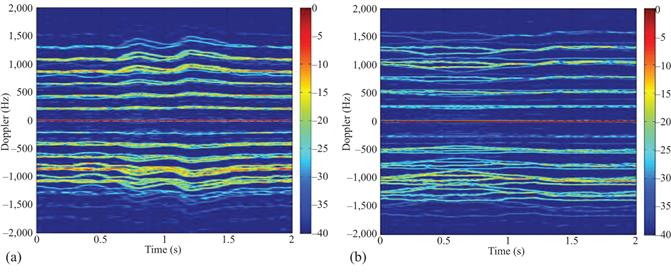
Figure 9.19 Drone micro-Doppler signature for (a) no payload monostatic and (b) 500-g payload monostatic
The SVD features selected for classification were the mean and standard deviation of the U output matrix. It was decided that only two features were to be used to make a fair comparison with the range domain classifier features and upon inspection the U matrix was found to be the most effective in differentiating different payload classes. It was noted that the largest separation within the feature space was achieved within the monostatic node data, compared to the two bistatic nodes.
Table 9.7 shows the results of payload classification produced for centroid and SVD features. This was an average value over 100 repeats after selecting 50% of data for training and 50% for use randomly as 1-s sections of data from which to produce the features. Overall, it was found that the highest successful classification results were achieved at a level of 96%–97% for this five-class problem using the centroid features. This high level of classification was achieved through a fused classification process using the data from all three radar nodes using a classifier per radar node and fusing the decision, including a confidence threshold within the decision (the bottom row of Table 9.7). When data from only the monostatic node was used, the classification rate was limited to a maximum of 85% and 93% for SVD and centroid features, respectively. It is important to note that simply using all three-radar nodes data in a single classifier produced a worse result than the monostatic only case. It was found that using independent classifier for each radar nodes data was key in order to obtain an improvement over the monostatic success rates.
Table 9.7 Table of classification success rate using centroid and SVD features
| Classifier data used | Classification success rate (%) centroid features | Classification success rate (%) SVD features |
|---|---|---|
| Monostatic only | 93.60 | 85.20 |
| 3 nodes single classifier | 81.70 | 71.00 |
| 3 nodes voting | 96.90 | 94.20 |
| 3 nodes vote+confidence threshold | 96.90 | 94.70 |
The multistatic network classification level demonstrates the potential for such a system to identify drones with varying payloads attached, but it must be noted that the empirical data captured were in ideal conditions with a hovering drone of the same type and as short ranges to maximise SNR. In real world challenges with unknown drone model that is erratically flying to evade detection, this same problem will likely have a much reduced classification success rate. A comprehensive review of the payload classification research is provided within Chapter 11 of this book.
9.8 NeXtRAD L- and X-band drone and birds measurements
The NeXtRAD radar system is currently housed in the South African Institute of Maritime Technology (IMT) on the coast of Simons Town, South Africa. In December 2018 and December 2019, NeXtRAD trials focused on bird and drone measurements were conducted, predominantly stationed from the IMT building. The NeXtRAD system consists of three nodes, one Transceiver (Node 0), which is typically based on the IMT building roof, and two portable receivers (Node 1 and Node 2) which were located at different places along the coast of Simons Town Bay area to enable the desired multistatic geometry required. Node 2 suffered technical problems during the trials; therefore, data from this node are not presented here. However, the different positions used for Node 1 during the trials provide data at bistatic angles of ~10° and ~88° with baselines of ~150 m and ~2 km, respectively. During both trials, measurements were taken in a marine environment containing a variety of non-cooperative targets, including birds, flocks of birds, a marine buoy, a lighthouse and in some cases passing boats. A DJI Matrice hexacopter UAV was used as a cooperative target for both trials. The field setup is summarised in Figure 9.20. Ground truth data of the UAV’s flightpath is provided by its onboard GPS. These ground-truth GPS data have been aligned with the radar data, allowing us to automatically extract range cells that contain a drone target (e.g. for micro-Doppler analysis).
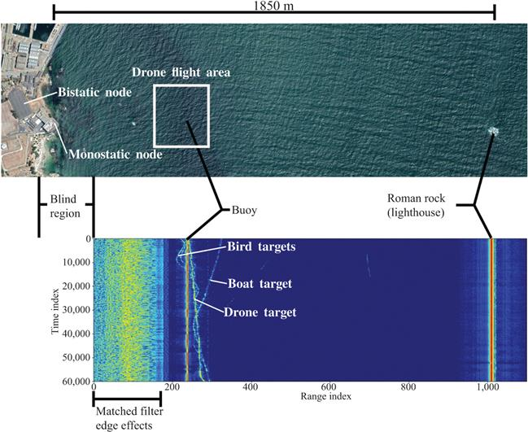
Figure 9.20 Google Earth image (top) of the NeXtRAD trial site and corresponding L-band monostatic RTI plot recorded on 13 December 2018 (bottom). Key features of the data which appear throughout the data set used in this study are labelled
Figure 9.21 shows a spectrogram created across range cells containing a drone target in a NeXtRAD L-band data set. A time window of 200 samples was used to create the spectrogram, which, given NeXtRAD’s PRF of 1 kHz, corresponds to 0.2 s. The bulk-Doppler signal can be seen varying around 0 Hz as the drone’s flight path takes it towards and away from the radar node. Either side of the bulk-Doppler signature, HERM line structures (characteristic of a UAV’s micro-Doppler signature), can be observed approximately 20 dB below the level of the bulk-Doppler. In contrast to the model data shown in Section 9.3, the combination of HERM line contributions from each of the six rotors and wrapping of HERM lines due to the low PRF of the NeXtRAD system has led to a rather confused pattern of HERM lines. In such a case, reliable measurements of HERM line spacing to determine drone characteristics (such as rotor rotation rate) are challenging. Despite this, the distinctive HERM line structure is still a powerful tool in distinguishing UAVs from non-UAV targets as will be demonstrated in the following section.
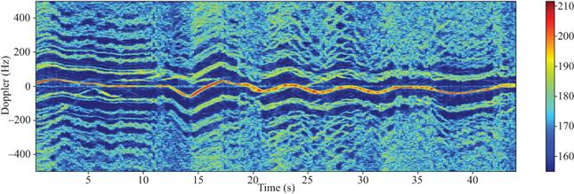
Figure 9.21 Spectrogram of UAV target at L-band using a time window of 0.2 s
NeXtRAD’s dual-polarisation receive capability allows HH and HV data to be acquired simultaneously at X-band. Figure 9.22 shows spectrograms of range cells containing a drone target from one such acquisition. It should be noted that NeXtRAD’s X-band transmit channel is significantly lower power than the L-band one, resulting in much lower target SNR and subsequently less definition in micro-Doppler signatures at X-band. Despite this, HERM line structures are still evident in both co- and cross-polarised measurements. Due to the higher frequency, bulk-Doppler variations are far more pronounced than at L-band. In both the co- and cross-pol cases, the HERM lines again appear at an intensity of ~20 dB below that of the bulk-Doppler. The noteworthy feature of Figure 9.22 is that neither co- nor cross-pol data consistently provide the best clarity of HERM lines. For example, at around 20–30 s, the co-pol data provide the most distinct HERM lines at positive Doppler frequencies; however, at negative Doppler frequencies the cross-pol data have greater clarity. This observation is typical across the full NeXtRAD data set and strongly suggests that UAV detection approaches may benefit from making the use of polarimetric data.
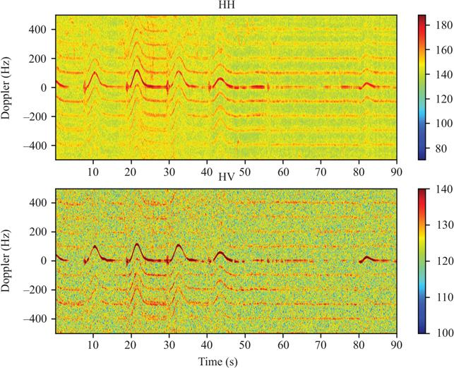
Figure 9.22 Spectrograms of a drone target at X-band using both co-polarised (upper) and cross-polarised (lower) transmit and receive. A time window of 0.2 s was used to produce the spectrogram
Figure 9.23 shows a spectrogram of single range cell containing several bird targets in an L-band data set. As these are non-cooperative targets, their specific behaviour during the radar acquisition is not known (e.g. it is not known if they were gliding or flapping their wings). However, it seems reasonable to assume that over the full 60 s acquisition some mixture of behaviours will have been captured. The spectrogram was created using a time window of 0.2 s. The contrast of the bird micro-Doppler with the UAV micro-Doppler signatures shown in Figure 9.23 and Figure 9.21 is clear, and we show in the next section how this may be used to classify UAV targets.
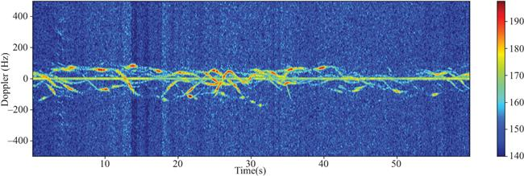
Figure 9.23 Spectrogram of several bird targets at L-band. The micro-Doppler signature is clearly distinct from that of a drone
9.8.1 Drone filtering
The stark contrast between the micro-Doppler signature of a UAV and a non-UAV target can be used as a simple means to discriminate between the two. As a demonstration, we present an algorithm which takes RTI data as its input and returns a likelihood map (in range and time) of a drone target being present. We refer to this as ‘drone filtering’. The drone filter algorithm exploits the symmetry of the HERM lines about the bulk-Doppler for a UAV target compared to the asymmetry of the micro-Doppler signatures from other targets (especially birds). For a typical scene, outputs from the filter span many orders of magnitude and are best presented on a logarithmic (dB) scale. Our preferred normalisation for this scale is to normalise against a static non-drone target in the scene (hence drone targets will be indicated by high, positive dB values). For this purpose, we are using the Roman Rock lighthouse which is ~1.9 km from the monostatic node (see Figure 9.20).
Figure 9.24 shows results of applying the algorithm to L-band monostatic data. As is clear from the figure, the algorithm is extremely effective at removing the buoy target and multiple bird targets from the scene. There are occasional false positives, which typically occur when there are multiple bird targets appearing at the same range. However, these are transient and easily distinguishable from the drone track.
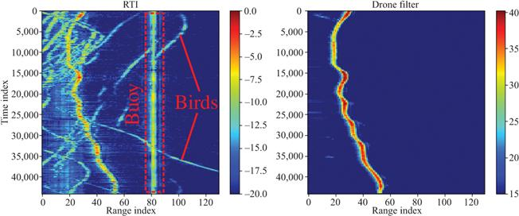
Figure 9.24 RTI plot (left) of L-band monostatic acquisition containing a drone target, birds and the marine buoy. RTI plot after applying the drone filter algorithm to the data (right). The filter is shown to effectively remove bird targets and the buoy target
A more challenging scene than that shown in Figure 9.24 is one containing a flock of birds. The 2018 NeXtRAD data set contains one such acquisition (recorded at L-band). Figure 9.25 shows this data set and the results of applying the drone filter algorithm to it. Within the recording, a static target can be observed at range bin 60 which is thought to be caused by reflections from a small buoy on the sea surface. The vast majority of returns otherwise within the data were generated by a significant flock of bird targets.
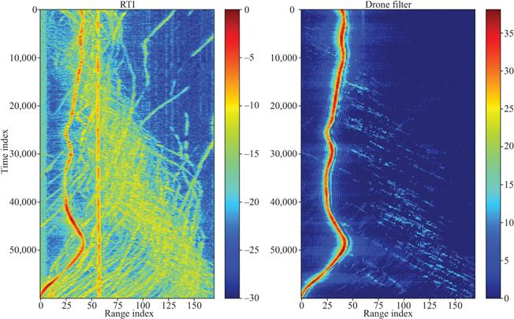
Figure 9.25 RTI plot (left) of L-band monostatic acquisition containing both a drone target and a flock of birds. RTI plot after applying the drone filter algorithm to the data (right)
The results shown in Figure 9.25 illustrate that the drone filter algorithm is still very effective at picking out the drone within the flock of birds while suppressing non-drone targets. However, it is also worth noting that multiple birds coinciding in the same range cells give rise to some ‘speckle’ in the algorithm output (seen in particular in the lower right region of the drone filter data in Figure 9.25). The speckle is ~20 dB below the amplitude of the drone target and therefore easily distinguished as non-drone. It may be further suppressed by median filtering the output from the drone filter.
9.9 Concluding remarks
This chapter has reviewed both modelled and real empirical data sets of bird and drone signals as perceived by monostatic and multistatic radar systems with a strong focus on the micro-Doppler signature of these targets. Analysis of the data has been presented, and key points have been summarised within each section. This area of research is in its relatively infancy due to the ever-changing problem that drone detection represents, but the research shown is some of the current cutting-edge outputs. The use of drones in both military and civilian applications has continued to show strong growth for a number of years. With this current trend, they are clearly going to be part of current and future military sensing challenges. Research is required to best understand how to sense this paradigm shift from large fast moving expensive airborne platforms to significant numbers of low cost, slow and small RCS platforms.
It is clear from the material presented that radar micro-Doppler has been proven to be a vital method in differentiating between these two target categories. If only time domain signatures are used to differentiate bird and drone targets, it is a very challenging problem. Techniques based on extracting information from the micro-Doppler signatures will no doubt be leveraged in any real-world system tasked with this objective. It is important to note that the micro-Doppler contributions from rotor blades of a drone and the flapping wings of a bird can be significantly below the main body return, but if they are detectable, exploiting them should be a priority for any radar system tasked with differentiating these two classes of target.
Assistance may be found when using fully polarimetric systems in order to differentiate a drone and bird target but without processing other signal characteristics, this high-priority challenge will remain unsolved. The use of micro-Doppler comparisons between target classes has been found to be very effective in both differentiating drone and bird targets, using the explained filtering techniques, as well as even differentiating different drone payloads. The authors believe that if Automatic Target Recognition techniques are going to be applied to identify threat drone systems compared to benign birds, micro-Doppler has to be one of the sensing methodologies. Overall a total solution will require data fusion from a number of sensing domains in order to maximise its potential, including EO, ES and potentially even acoustic sensing methods.
Future currently unaddressed challenges in the area of drone micro-Doppler include the fully quantitative characterisation of how bistatic angle affects the perceived drone micro-Doppler signatures and hence how best can a multistatic system be deployed to protect a given know high-value area, e.g. a port, airport or military base. As well as this research into flight dynamics of drone and birds from a tracking perspective should be connected with the micro-Doppler research outputs such that one can inform the other. In that, if a target is found to have given micro-Doppler signature this could help subcategorise its potential class and therefore inform the flight dynamics model used to improve the track fidelity achieved. Of course, it is also of great interest to validate the detection and discrimination concepts developed in real-world scenarios and at ranges which allow for effective responses to situations to be made. If some very effective techniques are limited only to short ranges, then their utility in the real world may be restricted compared to other methods that have lower detection or classification rates but can achieve much greater ranges.
Acknowledgements
The authors are very grateful to the many exceptional researchers who have contributed to the development of the NetRAD system Chris Baker, Karl Woodbridge, Shaun Doughty, Tom Derham, Waddah Al-Ashwal and Stephan Sandenbergh. As well as those who helped to develop the NeXtRAD system, particularly Hugh Griffiths, Francesco Fioranelli, Riccardo Palama, Simon Lewis and Brad Kahn.
The authors would like to acknowledge the support of the many supporters and funding agencies that have enabled the research conducted at UCL and UCT, including the EPSRC, IET for the A. F. Harvey Award, FFI Norway, Royal Academy of Engineering, the US ONR(G) and the IMT. In particular, the authors would like to thank both Dstl and the Defence and Security Accelerator (DASA) which funded some of the most recent analysis of UAV signatures presented within this chapter.
References
[1] “Consumer Drone Market Analysis By Product (Multi-Rotor, Nano) By Application And Segment Forecasts To 2024,” Report ID: 978-1-68038-831-2, Grand View Research; 2016. https://www.grandviewresearch.com/industry-analysis/consumer-drone-market
[2] M. Z. Anwar, Z. Kaleem, and A. Jamalipour, “Machine learning inspired sound-based amateur drone detection for public safety applications,” IEEE Trans. Veh. Technol., vol. 68, no. 3, pp. 2526–2534, 2019.
[3] Z. Shi, X. Chang, C. Yang, Z. Wu, and J. Wu, “An acoustic-based surveillance system for amateur drones detection and localization,” IEEE Trans. Veh. Technol., vol. 69, no. 3, pp. 2731–2739, 2020.
[4] A. H. Michel, Counter-Drone Systems, 2nd Edition. Center for the Study of the Drone at Bard College; 2019.
[5] G. C. Birch, J. C. Griffin, and M. K. Erdman, “UAS detection classification and neutralization: Market survey 2015,” Sandia Rep., 2015, p. 74.
[6] S. Balkan, Daesh’s Drone Strategy Technology and the Rise of Innovative Terrorism. SETA Foundation for Political, Economic and Social Research, 2017.
[7] D. Lack and G. C. Varley, “Detection of birds by radar,” Nature, vol. 156, no. 3969, p. 629, 1945.
[8] I. O. Buss, “Bird detection by radar,” Auk, vol. 63, no. 3, pp. 315–318, 1946.
[9] B. Bruderer, “The radar window to bird migration BT,” Avian Migration, Berlin, Heidelberg: Springer; 2003, pp. 347–358.
[10] H. Alfiya, “Surveillance radar data on nocturnal bird migration over Israel, 1989–1993,” Isr. J. Ecol. Evol., vol. 41, no. 3, pp. 517–522.
[11] D. F. Bertram, “Use of radar for monitoring colonial burrow-nesting seabirds,” J. Field Ornithol., 1999.
[12] G. W. Schaeffer, “Bird recognition by radar: A study in quantitative radar ornithology,” in The Problems of Birds as Pests, R. K. Murton and E. N. Wright, Eds. Academic Press, London, 1968, pp. 53–86.
[13] C. R. Vaughn, “Birds and insects as radar targets: A review,” Proc. IEEE, vol. 73, no. 2, pp. 205–227, 1985.
[14] B. Torvik, K. E. Olsen, and H. D. Griffiths, “X-band measurements of radar signatures of large sea birds,” in 2014 Int. Radar Conf. Radar 2014, 2014, pp. 1–6.
[15] P. Molchanov, R. I. A. Harmanny, J. J. M. De Wit, K. Egiazarian, and J. Astola, “Classification of small UAVs and birds by micro-Doppler signatures,” Int. J. Microwave Wireless Technol., vol. 6, no. 3–4, pp. 435–444, 2014.
[16] B. Torvik, Investigation of Non-cooperative Target Recognition of Small and Slow Moving Air Targets in Modern Air Defence Surveillance Radar, University College London, London, 2016.
[17] B. Torvik, K. E. Olsen, and H. Griffiths, “Classification of birds and UAVs based on radar polarimetry,” IEEE Geosci. Remote Sens. Lett., vol. 13, no. 9, pp. 1305–1309, 2016.
[18] M. Skolnik, Introduction to Radar Systems. New York, NY: McGraw Hill, 2001.
[19] S. Rahman and D. A. Robertson, “In-flight RCS measurements of drones and birds at K-band and W-band,” IET Radar Sonar Navig., vol. 13, no. 2, pp. 300–309, 2019.
[20] B. W. Tobalske, “Biomechanics of bird flight,” J. Exp. Biol., vol. 210, no. 18, pp. 3135–3146, 2007.
[21] G. Pollon, “Distributions of radar angels,” IEEE Trans. AESS, vol. AES-8, no. 6, pp. 721–726, 1972.
[22] N. Huansheng, C. Weishi, M. Xia, and L. Jing, “Bird-aircraft strike avoidance radar,” IEEE Aerosp. Electron. Syst. Mag., vol. 25, no. 1, pp. 19–28, 2010.
[23] J. Gong, J. Yan, D. Li, and R. Chen, “Comparison of radar signatures based on flight morphology for large birds and small birds,” IET Radar Sonar Navig., vol. 14, no. 9, pp. 1365–1369, 2020.
[24] N. J. Peters, C. Oppenheimer, P. Brennan, L. B. Lok, M. Ash, and P. Kyle, “Radar altimetry as a robust tool for monitoring the active lava lake at Erebus Volcano, Antarctica,” Geophys. Res. Lett., vol. 45, no. 17, pp. 8897–8904, 2018.
[25] S. Doughty, K. Woodbridge, and C. J. Baker, “Characterisation of a multistatic radar system,” in Proc. 3rd Eur. Radar Conf. EuRAD 2006, 2006, pp. 5–8.
[26] T. Derham, S. Doughty, K. Woodbridge, and C. J. Baker, “Realisation and evaluation of a low cost netted radar system,” in CIE International Conference of Radar Proceedings, 2006.
[27] M. Ritchie, A. Stove, K. Woodbridge, and H. Griffiths, “NetRAD: Monostatic and bistatic sea clutter texture and Doppler spectra characterization at S-band,” IEEE Trans. Geosci. Remote Sens., vol. 54, no. 9, pp. 5533–5543, 2016.
[28] J. S. Sandenbergh and M. R. Inggs, “A common view GPSDO to synchronize netted radar,” in IET Int. Conf. Radar Syst. 2007, 2007, pp. 24–24.
[29] P. Beasley, M. Ritchie, H. Griffiths, et al., “Multistatic radar measurements of UAVs at X-band and L-band,” in IEEE Radar Conference, Florence, Italy, 2020.
[30] R. Palama, F. Fioranelli, M. Ritchie, M. R. Inggs, S. Lewis, and H. Griffiths, “Measurements of multistatic XL band radar signatures of UAVS,” in 2019 Int. Radar Conf. RADAR 2019, 2019, pp. 15–19.
[31] M. R. Inggs, S. Lewis, R. Palama, M. Ritchie, and H. Griffiths, “Report on the 2018 trials of the multistatic NeXtRAD dual band polarimetric radar,” in 2019 IEEE Radar Conf., 2019, pp. 1–6.
[32] M. Inggs, S. Coetzee, H. Griffiths, F. Fioranelli, M. Ritchie, and K. Woodbridge, “Database design for an experimental, dual band, polarimetric radar,” in 2015 IEEE Radar Conference – Proceedings, 2015.
[33] S. Alhuwaimel, S. Coetzee, P. Cheng, et al., “First measurements with NeXtRAD, a polarimetric X/L Band radar network,” in 2017 IEEE Radar Conference, RadarConf 2017, 2017.
[34] M. Inggs, H. Griffiths, F. Fioranelli, M. Ritchie, and K. Woodbridge, “Multistatic radar: System requirements and experimental validation,” in 2014 International Radar Conference, Radar 2014, 2014.
[35] M. Ritchie, F. Fioranelli, H. Griffiths, and B. Torvik, “Monostatic and bistatic radar measurements of birds and micro-drone,” in 2016 IEEE Radar Conference, RadarConf 2016, 2016.
[36] B. K. Kim, H.-S. Kang, S. Lee, and S.-O. Park, “Improved drone classification using polarimetric merged-Doppler images,” IEEE Geosci. Remote Sens. Lett., pp. 1–5, 2020.
[37] S. Zhang, G. Li, M. Ritchie, F. Fioranelli, and H. Griffiths, “Dynamic hand gesture classification based on radar micro-Doppler signatures,” in 2016 CIE International Conference on Radar, RADAR 2016, 2017.
[38] G. Li, R. Zhang, M. Ritchie, and H. Griffiths, “Sparsity-based dynamic hand gesture recognition using micro-Doppler signatures,” in 2017 IEEE Radar Conference, RadarConf 2017, 2017, pp. 0928–0931.
[39] M. Ritchie and A. M. Jones, “Micro-Doppler gesture recognition using Doppler, time and range based features,” in IEEE Radar Conference, Boston, 2019.
[40] M. Ritchie, F. Fioranelli, and H. Borrion, “Micro UAV crime prevention: Can we help Princess Leia?” in Crime Prevention in the 21st Century: Insightful Approaches for Crime Prevention Initiatives, 2017, pp. 359–376.
[41] F. Fioranelli, M. Ritchie, H. Griffiths, and H. Borrion, “Classification of loaded/unloaded microdrones using multistatic radar,” Electron. Lett., vol. 51, no. 22, pp. 1813–1815, 2015.
[42] M. Ritchie, F. Fioranelli, H. Borrion, and H. Griffiths, “Multistatic micro-Doppler radar feature extraction for classification of unloaded/loaded micro-drones,” IET Radar Sonar Navig., vol. 11, no. 1, pp. 116–124, 2017.
1Department of Electronic and Electrical Engineering, University College London, London, UK